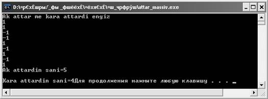

Бір өлшемді массив. Бір өлшемді массив элементтерін енгізу және шығару. Белгіленген сипаттары бар элементті іздеу
Қазақ елінің қандай ұлттық
ойынын алып қарасақ та жас ұрпаққа ұлағатты тәрбие беруге бағытталан. Қазақтың
ұлттық ойындарының бірі – асық ойыны. Бұл ойын ертеден мал шаруашылығымен
айналысқан ата-бабаларымыздың қолданысында келе жатқан көне ойын түрі.
Ерте кезде әр қазақтың балалары мен жастарының бас қосуының негізінде
асық ойыны ойнатылатын. Асық ойыны баланың жастайынан ой-қабілетін шыңдап,
дәлдікке, ептілікке, ширақтылыққа, ұстамдылыққа, алғырлыққа, сыйлыстыққа
тәрбиелеген. Ұлттық асық ойынын ойнауда балалар дәлдеп атуға, мергендікке
үйренсе, информатика курсында осындай ойынның алгоритмін құруда ұлттық ойынның
түрлерімен танысып, олардың ерекшеліктерімен танысады.
Есептің Python программалау
тіліндегі программа коды 1, 2 -суреттерде берілген.
|
Python программалау тіліндегі
программа коды |
|
print("Kizil asikty tabu") n=5 b=[ str (input()) for i in range(n)] for i in b: if i=="kizil": print('kizil asik
tabuldy ',b.index(i)+1,'-asik kizil') exit() #Программаны
аяктау else: print('kelesi asikti
al') |
Сурет 1- Қызыл асықты табу
Сурет 2 - Алынған нәтиже
Есептің С++ программалау тіліндегі программа коды 3,4-суреттерде берілген.
|
|
С++ программалау тіліндегі программа коды |
|
1 2 3 4 5 6 7 8 9 10 11 12 13 14 15 16 17 |
#include <iostream> #include <cstring> #include <stdlib.h> using namespace std; int main(int argc, char** argv) { string b[5];
string a[5]="kizil"; int i; cout <<"Asiktardi engiz ="; for (i=1; i<=5; i++) cin>>b[i]; cout<<"asikti
tekseru\n\n"; for (i=1; i<=5; i++) if (b[i]!="kizil") cout<<"kelesi asikti al
\n\n"; else {cout<<"kizil asik
tabildy; "<<i<<"-kizil asik"; exit(EXIT_SUCCESS); return 0;} system("pause");} |
Сурет 79 - С++ программалау тілінде қызыл асықты табу
Сурет 80 - Алынған нәтиже
Жылқы
адамзат өркениетіндегі, әсіресе, дала өркениетіндегі дамудың жарқын да елеулі
көрсеткіштерінің бірі болады. Қазақ халқы жылқы малын 3 топқа бөлген. Қазақтар
бәйгеге қосатын жүйрік жылқыларды тұлпар, арғымақ, сәйгүлік деп
әлпештеп, ерекше күтімге алған. Ал ауыр жүк артуға, алыс жолға төзімді
жылқыны қазанат деп атап, оны да ерекше бағалаған. Ал еті мен сүті
үшін өсіретін қалған жылқылар жабы деп аталған
Нұсқаулық. Демек, бүтін
типті 9 элементтен тұратын бір өлшемді массив берілген. Ақ аттарды 1 деп
енгізіп, қара аттарды -1 деп енгізуімізге болады. Массив элементтерінің оң және
теріс элементтерінің қосындысын немесе санын табу оңай.
Есептің Python программалау
тіліндегі программа коды 5, 6 -суреттерде берілген.
|
Python программалау тіліндегі программа коды |
|
print("Ак аттар мен кара аттардын санын
есептеу") n=9 n1=0 n2=0 a=[int(input()) for i in range(n)] for i in a: if
i>0:
n1+=1 else:
n2+=1 print('Ак аттадын саны=',n1) print('Кара аттадын саны=',n2) |
Сурет 5 - Ақ аттар мен қара аттардың санын есептеу
Сурет 6- Алынған нәтиже
Есептің С++ программалау тіліндегі программа коды 7, 8 -суреттерде берілген.
|
|
С++ программалау
тіліндегі программа коды |
|
1 2 3 4 5 6 7 8 9 10 11 12 13 14 15 |
#include <iostream> using namespace std; int main(int argc, char** argv) { int i, n=9,n1=0,n2=0; int a[n]; cout <<"Ak attar me kara attardi engiz \n"; for (i=1; i<=n; i++) cin>>a[i]; for (i=1; i<=n; i++) if (a[i]>0) n1+=1; else n2+=1; cout<<"Ak attardin
sani="<<n1<<"\n\n"; cout<<"Kara attardin
sani="<<n2; system("pause"); } |
Сурет 7 - С++ программалау тілінде ақ аттар мен қара аттардың санын
есептеу

Сурет 8 - Алынған нәтиже
Қазақстанның табиғи-климаттық
жағдайларының нәтижесінде үш жүз жыл бойы жер пайдаланудың және өмір
тіршілігінің негізгі нысаны мал шауаршылығы – шаруашылық өндірісінің ерекше
түрі болды, бұл ретте жұмыстың басым көпшілігі экстенсивті жылжымалы мал
шаруашылығы болып, тұрғындардың басым көпшілігі маусымдық көшіп-қонумен
айналысты. Қазақ халқында сиыр малы туралы мақал-мәтелдер көп. Соның бірі
төменде берілген:
Мал жақсысы – сиыр,
Жер жақсысы – кебір.
Түзде бұзауы жамырағанның,
Үйде айраны төгілер.
Нұсқаулық. Бүтін типті 10
элементтен тұратын бір өлшемді массив берілген. Массив элементтерінің тақ және
жұп индексте орналасқан элементтерінің қосындысын табамыз.
Есептің Python программалау
тіліндегі программа коды 9, 10 -суреттерде берілген.
|
Python программалау тіліндегі программа коды |
|
n=10 s=0 b=0 print("Сиырлар мен бузаулардын санын есептеу") a=[int(input()) for i in range(n)] for i in a: if i % 2==0: s=s+i else: b=b+i print('Suirlarding sani=',s) print('Buzaularding sani=',b) |

Сурет 9 - Массивтің тақ және жұп индексте орналасқан сиырлар мен
бұзаулардың санын есептеу
Сурет 10 - Алынған нәтиже
Есептің С++ программалау тіліндегі программа коды 11, 12 -суреттерде берілген.
|
|
С++ программалау
тіліндегі программа коды |
|
1 2 3 4 5 6 7 8 9 10 11 12 13 14 15 16 17 |
#include <iostream> #include <cstring> #include <stdlib.h> using namespace std; int main(int argc, char** argv) { int i, n=10,s=0,b=0; int a[10]; cout<<"Arbir zhaidagi suirlar men buzaukardi engiz="; for (i=0; i<n; i++) cin>>a[i]; for (i=0; i<n; i++) if (i % 2==0) s+=a[i]; else b+=a[i]; cout<<"Suirlarding
sani="<<s<<"\n\n"; cout<<"Buzaularding sani="<<b; system("pause");} |
Сурет 11 - С++ программалау тілінде массивтің тақ және жұп индексте орналасқан
сиырлар мен бұзаулардың санын есептеу
Сурет 12 - Алынған нәтиже